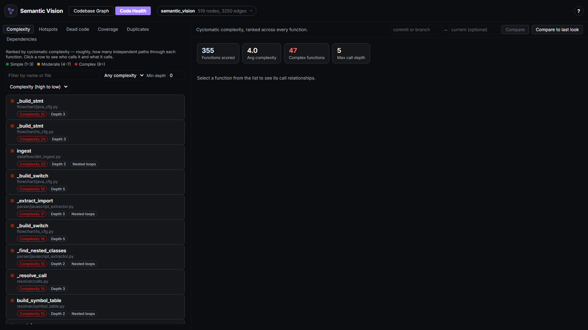
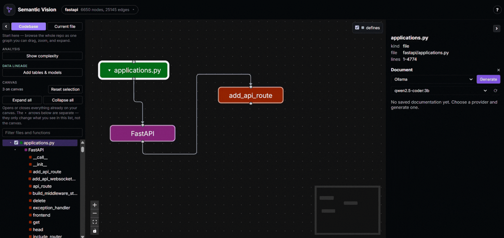
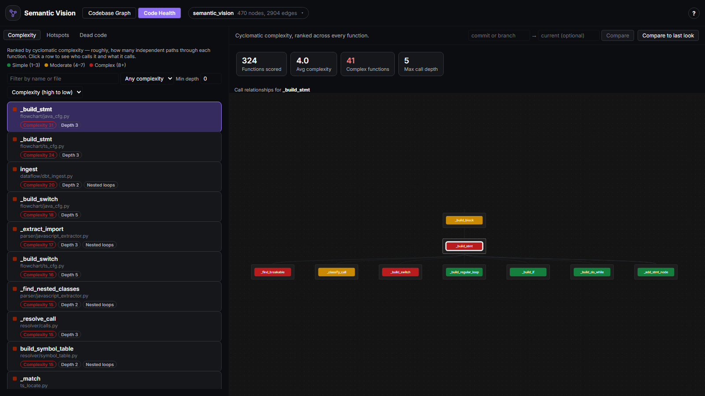

Code generation got faster.
Code understanding didn't.
AI coding agents can change hundreds of lines across dozens of files in seconds. But understanding those changes still means:
From code change to confidence.
The code changed. Now the real questions begin.
The agent makes a change
Changes process_payment(). Now what?
02 · ImpactSee the blast radius
What actually depends on this?

Check the health of the change
Did this make the code better or worse?

Understand the behavior
What does this function actually do?

Follow the data
What data does this change affect?
06 · AgentLet the agent see it too
Can my AI agent use this context itself?
Everything you need to understand a codebase.
Interactive Call Graph
See directories, files, classes, functions, imports, and calls as one interactive graph — structure that would take an hour of jumping between files, visible on one screen.
Impact Analysis
Know what depends on a function, table, or column before you change it. See direct and transitive callers, circular call chains, and the full blast radius.
Execution Flowcharts
Trace how a function actually behaves — branches, loops, I/O, and calls to other functions — without manually stepping through the source.
Code Health
Find the parts of your codebase worth worrying about: complexity, hotspots, coverage risk, dead code, duplicates, and dependency vulnerabilities.
AI Documentation
Generate documentation from the actual context around a function or file — source, callers, callees, and imports. Local Ollama, OpenAI, or Anthropic.
Code-to-Data Lineage
Follow application logic into the data it touches — code → models → tables → columns. SQLAlchemy, dbt manifests, and live database connections.
Know what you'll break before you approve the diff
Right-click any function for impact analysis: every direct and transitive caller, resolved from the real call graph — not a guess. Circular call chains are flagged instead of silently mishandled, and the whole blast radius lights up live on the graph.
Reviewing an AI agent's edit, or your own? See exactly what depends on a function before you merge, not after something breaks in production.
- Works the same on a table or column, tracing impact across code and data in one traversal
- The live demo highlights functions with real callers, so you can try it in one click
See the whole codebase as one map
Every directory, file, class, and function as a zoomable, color-coded graph with call/import/defines edges — structure that would otherwise take an hour of grepping to piece together by hand.
- Real-time search across the whole repo, or scoped to one file
- Dragged layout and analysis state persist automatically

Trace exactly how a function behaves
Right-click any function for its execution flowchart, built from its real AST/CST rather than a rough summary: entry and return points, decisions with Yes/No edges, loops with a visible back-edge, I/O calls, and calls out to other functions in the repo — each in its own conventional flowchart shape.
Works for Python, JS/TS, and Java, including switch fallthrough, do...while's bottom-condition check, and labeled break/continue.
Never write another docstring by hand
Right-click any function and choose Document to stream real Markdown documentation — Purpose, Parameters, Returns, Side Effects, Notes — assembled from its actual source, callers, callees, and parent class. Right-click a file for a module-level summary from its imports and signatures, without ever sending a function body.
Pick your provider: a local Ollama model (free, nothing leaves your machine), OpenAI, or Anthropic. Nothing is saved until you click Save.

Don't just review what changed. Review what it did to the codebase.
Complexity and blast radius tell you where a change matters. Coverage tells you whether that area is actually tested. Git history tells you which code keeps changing. Semantic Vision brings those signals together.
See which functions are actually worth worrying about
Complexity ranks every function by cyclomatic
complexity, computed from a real AST walk — decisions,
boolean-operator chains, comprehension filters, match
cases, and nested-loop hotspots all count, not just a line-count
guess.
- Hotspots weights that same complexity by how often each file actually changes — a moderately complex function edited constantly is a bigger practical risk than a complex one nobody touches
- Dead code surfaces zero-caller functions to review — candidates, never a verdict
- Coverage ranks by complexity × blast radius × (1 − test coverage) — point it at a coverage.py or lcov report you already generated
- Duplicates groups functions whose structure is identical once names, literals, and comments are stripped away
- Dependencies flags known vulnerabilities (via osv.dev) in packages you actually import, then graphs exactly which of your own files import a vulnerable one — opt-in, the one feature here that calls out to the network
- Recommendations asks an AI provider to prioritize across every signal above at once — the kind of cross-signal correlation easy to miss skimming six ranked lists one at a time
- Filter by name, file, complexity tier, or call depth, and sort any of the ranked lists
Click a row to see who calls it — and what it calls
Selecting any function shows its direct callers and callees as a live relationship graph, colored by complexity — the same information a callers-only drill-down used to take an extra click to reveal, now visible the moment you click a row.
Also git-aware: Compare to last look diffs the
current state against whatever it showed last time (useful right
after an AI agent's session), or type a commit or branch into the
ref picker to diff against any point in the repo's history — added
/ removed / changed functions, each with its before-and-after
complexity, so "did this edit help or hurt" is a glance instead of
a manual git diff read-through.

Your code doesn't exist in isolation.
Three sources feed the same graph, reconciled by table name, so the same table only ever shows up once.
Detected automatically, or connected explicitly
- SQLAlchemy models — declarative classes are detected on every parse, no setup: each becomes a table node with columns, foreign keys as edges, every reading/writing function connected down to the specific column.
- dbt — point it at a
manifest.jsonyour owndbt compilealready produced to pull in every model, itsref()dependencies, and the table it materializes. - A live database — paste a read-only connection string to introspect the real schema and see where your ORM models have drifted from what's actually deployed.

Impact analysis that crosses code and data in one traversal
Flip Data only to dim everything that isn't a table, a dbt model, or code that reads/writes one — the same graph, filtered to a lineage-only reading.
Right-click a table or a single column exactly like a function to see every function, model, and table upstream of it — the way to answer "what actually breaks if I rename this column, drop this table, or change what this dbt model materializes" before doing it, not after.
Your AI agent can see the map too.
Coding agents already know how to edit code. The problem is understanding the structure around that code. Semantic Vision exposes the same structural context through MCP.
Agents can query the same graph you see
Every tool below reuses the same warm-parsed graph as the web app and VS Code extension — an agent never has to re-derive structure it could just ask for.
- call graphs
- impact analysis
- callees
- complexity
- hotspots
- dead code
- coverage risk
- duplicates
- git-aware complexity diffs
- execution flow
- function source
Don't leave VS Code to understand your code.
Install the Semantic Vision extension and get the full experience directly beside your code.
No separate browser tab. No Python or uv installation required.
The backend ships bundled with the extension — open any Python, JS/TS, or Java repo and get the full graph, impact analysis, Code Health, flowcharts, AI docs, and lineage in a panel next to your code.
Fast, local, and private.
Semantic Vision performs its code analysis locally. Your code is never executed as part of static analysis.
Dependency vulnerability scanning (osv.dev) and AI providers (Ollama, OpenAI, Anthropic) are the only features that reach the network — both explicitly opt-in.
Works across your stack.
| Feature | Python | JavaScript / TypeScript | Java |
|---|---|---|---|
| Call graph — imports, classes, functions, calls | ✓ | ✓ | ✓ |
| Impact analysis (upstream callers, cycle detection) | ✓ | ✓ | ✓ |
| Code Health (complexity, hotspots, dead code, coverage, duplicates, dependencies, AI recommendations) | ✓ | ✓ | ✓ |
| Execution flowcharts | ✓ | ✓ | ✓ |
| AI-generated documentation | ✓ | ✓ | ✓ |
| Code-to-data lineage (SQLAlchemy, dbt, live DB) | ✓ | — | — |
| Docker packaging / one-command setup | ✓ | ✓ | ✓ |
Real repositories. Real performance.
Not this project's own fixtures — one large, popular repo per supported language.
| Language | Repo | Files | Parse — cold | Parse — warm | Render in browser |
|---|---|---|---|---|---|
| Python | fastapi/fastapi | 1,138 | 23.25s | 4.08s | 7.20–7.84s |
| JavaScript | three.js | 752 | 29.33s | 1.98s | 4.88–5.01s |
| TypeScript | nestjs/nest | 1,907 | 39.68s | 2.48s | 6.85–6.88s |
| Java | google/guava | 615 | 9.83s | 2.52s | 4.73–7.63s |
Three ways to try it — pick one
Try the live demo
Explore three real, precomputed repos — Python, JavaScript, and Java — right in your browser. No backend, no account, nothing to set up.
Open the demo →VS Code extension
Install from the Marketplace and open any Python, JS/TS, or Java repo. The backend ships bundled — no Python or Node toolchain required.
View on Marketplace →Run it locally, or via Docker
Clone the repo and run the backend + frontend yourself, or a single docker compose up --build — both fully documented.
Pick up exactly where you left off
Dragged layout, saved docs, and analysis state persist locally and restore instantly. Save location defaults to the repo's .git root, auto-detected even from a scoped-down subfolder.
What's under the hood
A FastAPI backend statically parses your code — Python's own ast, tree-sitter for JS/TS and Java. Code is never executed.